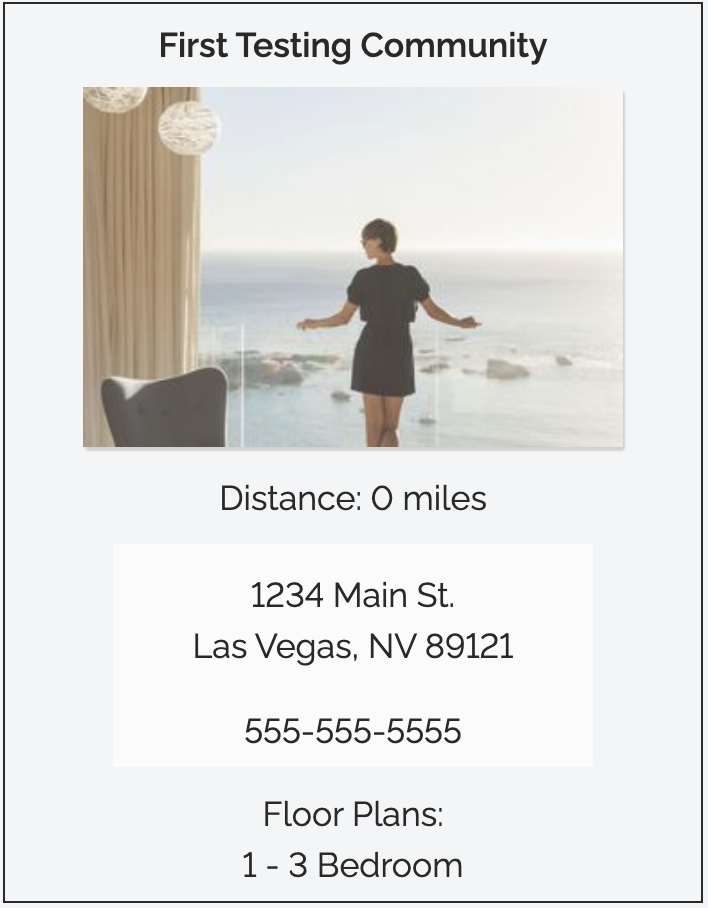
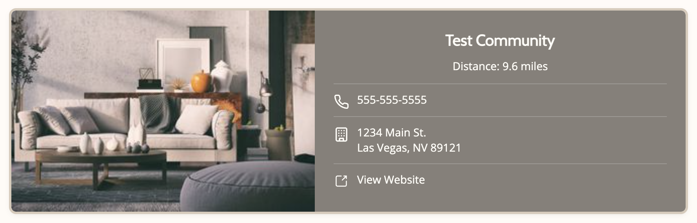
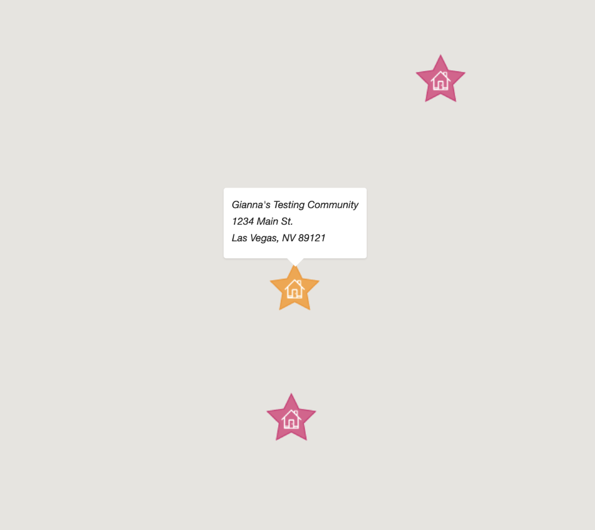
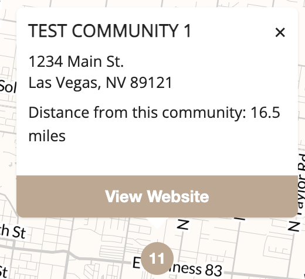
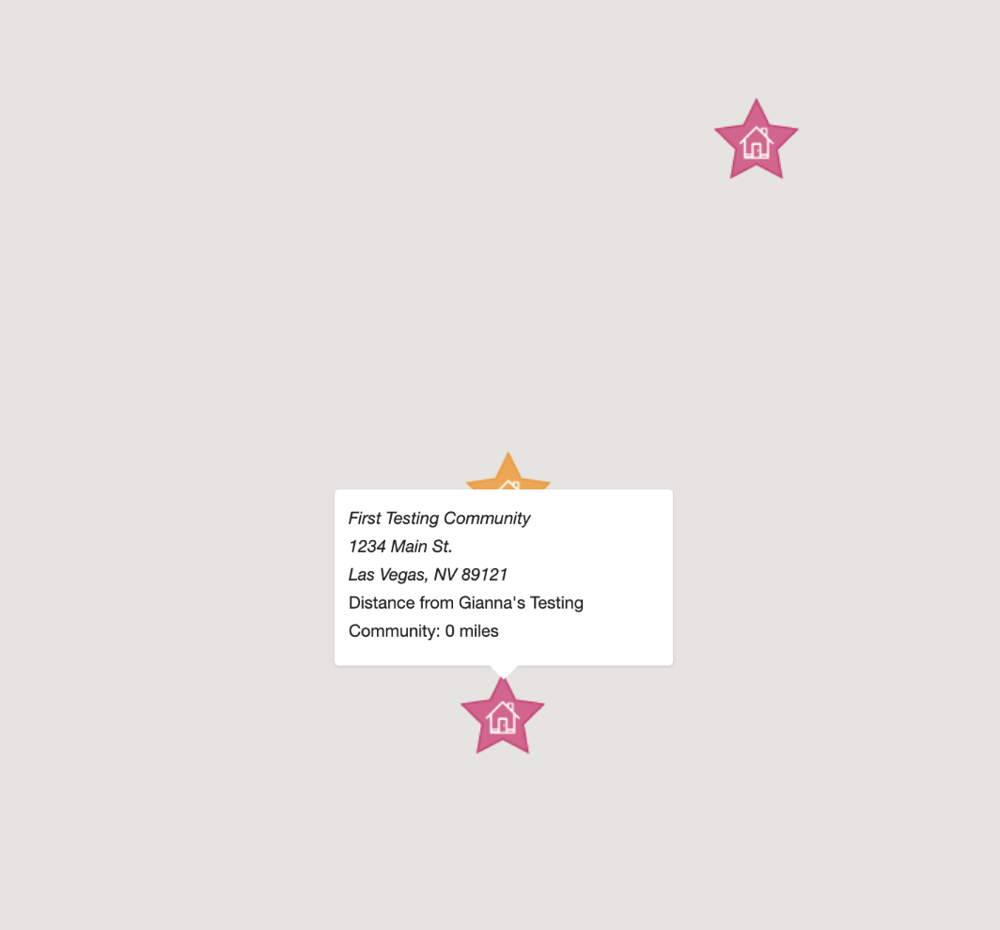
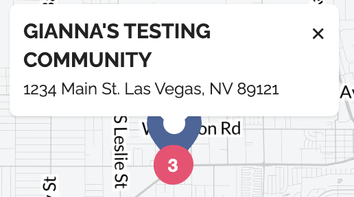
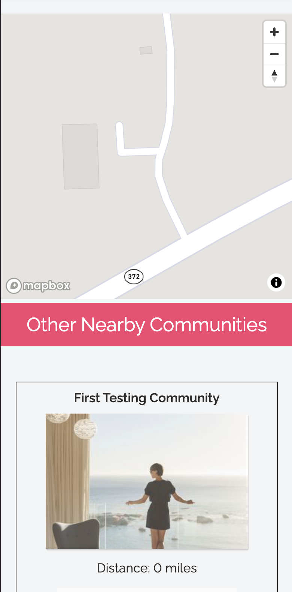
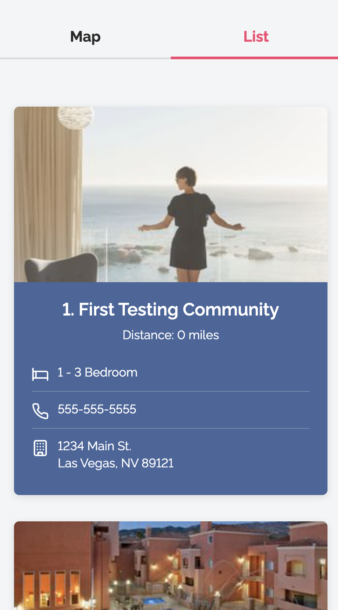
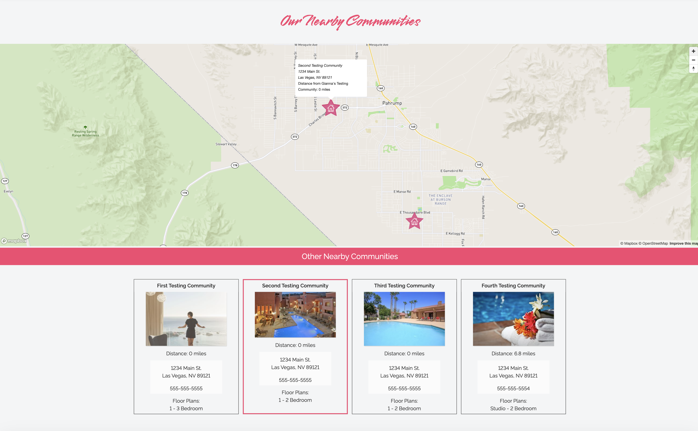

Nearby Communities UX Redesign
Redesigning the page that helps apartment seekers discover sister properties — improving scannability, mobile experience, and map interactions across a platform serving 14,000+ property sites.

Overview
The Problem
The existing Nearby Communities page lacked clear structure, making it difficult for prospective renters to quickly browse and compare sister properties. Key information wasn't prioritized, the map had broken interactions, and the mobile experience was essentially unusable — map and listings were stacked with no way to switch between them.
I was brought in to redesign the page within the existing platform and component system — leading both the Figma design work and the frontend implementation.
- Built within an existing platform and component system
- Limited flexibility in layout and functionality
- Worked within pre-existing design patterns and structure
- Required to support dynamic content and multiple listings
- Required to support multiple themes consistently
Design Process
The Decisions
Working within the constraints of an established component system meant every design decision had to be deliberate. I focused on four key areas where the existing experience was creating the most friction for users.
Card Scannability


The original card listed information in a vertical stack with no visual hierarchy — distance, address, phone, and floor plans were all weighted equally. I restructured the layout to lead with the property image and community name, grouped contact info with icons for quick recognition, and added a direct "View Website" CTA that was previously missing entirely.
Map Markers & Popups


The original map used decorative star icons that were visually noisy and didn't follow standard mapping conventions. Popups had no way to close them and no actionable links. I replaced the icons with clean numbered markers and rebuilt the popup to include a dismiss button and "View Website" action, reducing friction for users ready to explore a property.
Popup Interactions


Once a map popup opened, users had no way to dismiss it — it would sit on the map blocking the view. The redesigned popup includes an explicit close (×) button and a styled "View Website" CTA, making the interaction feel intentional rather than broken.
Mobile Experience


On mobile, the original layout stacked the map directly above the community cards with no visual separation. I introduced a tab-based Map / List toggle, allowing users to switch between views without losing context — a pattern familiar from apps like Google Maps that dramatically reduces cognitive load on small screens.
Desktop Layout


The original desktop layout placed the map full-width above a grid of cards, forcing users to scroll up and down to cross-reference the two. The redesigned layout shows map and list side by side, so clicking a marker immediately highlights the corresponding card. Updated numbered pins match the list, creating a cohesive spatial relationship between both views.
Final Outcome
Clearer, faster, more useful
The redesign introduced clearer information hierarchy, more intuitive map interactions, and a dramatically improved mobile experience — making it easier for prospective renters to browse, compare, and take action on nearby properties.
Every change was made within the constraints of an existing component system and designed to work across multiple property themes — a real-world constraint that shaped every decision and required careful prioritization throughout.